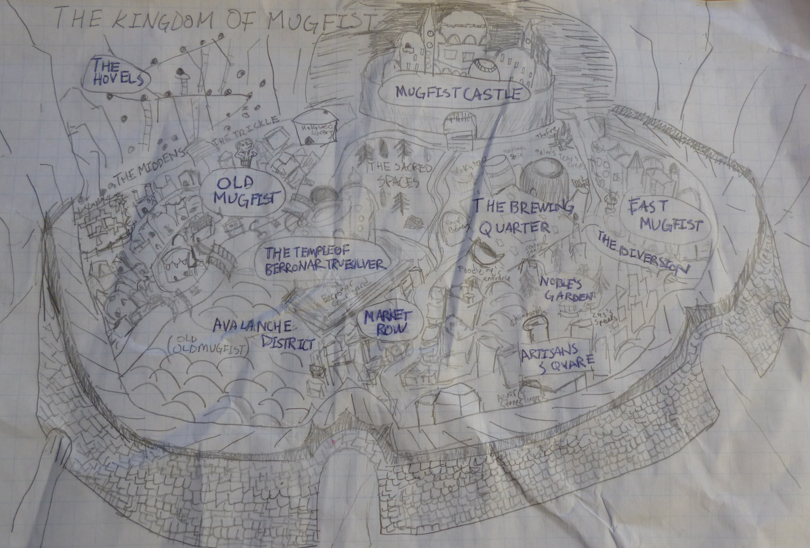
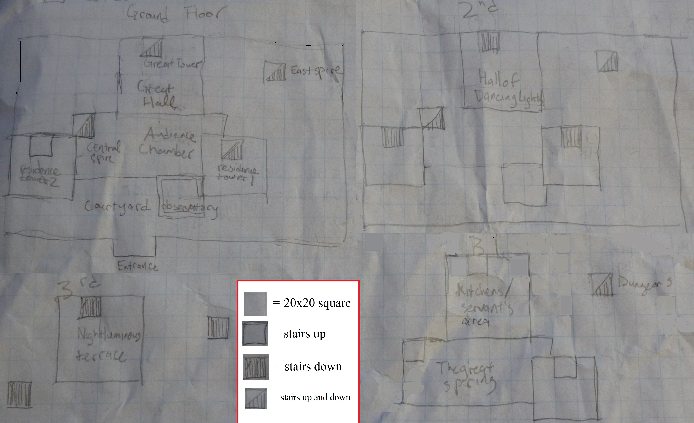
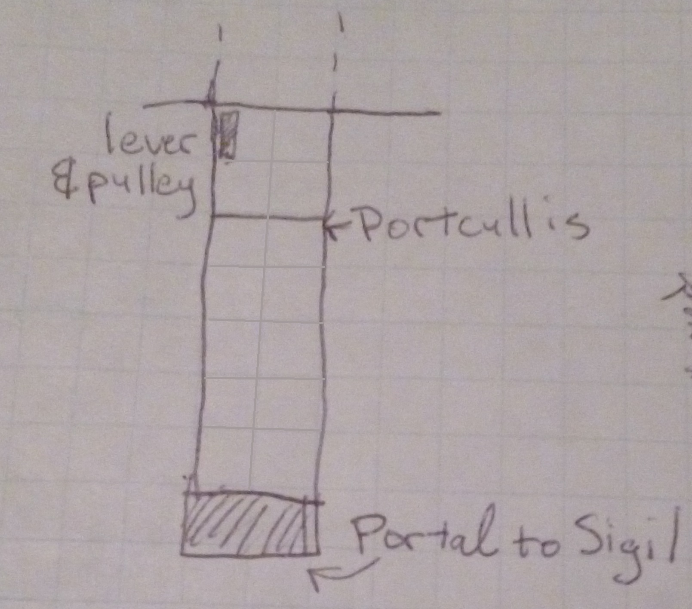
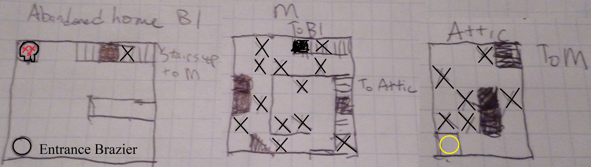
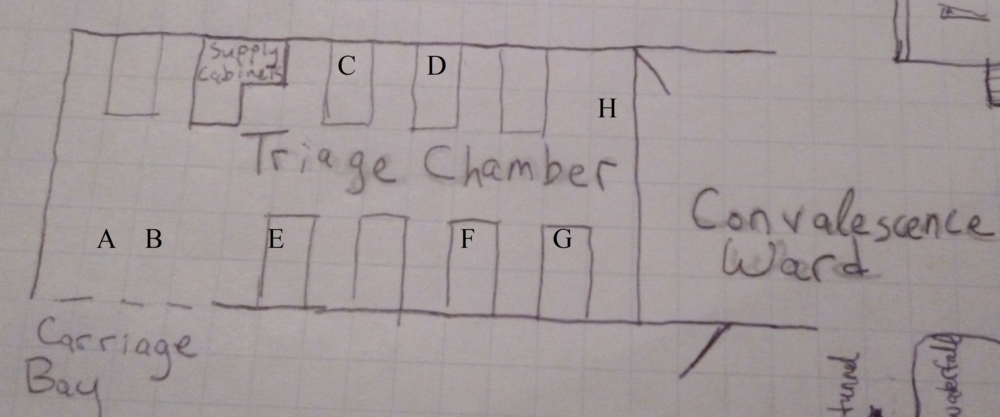
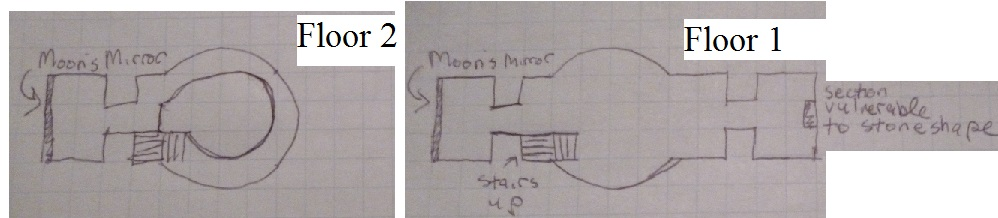
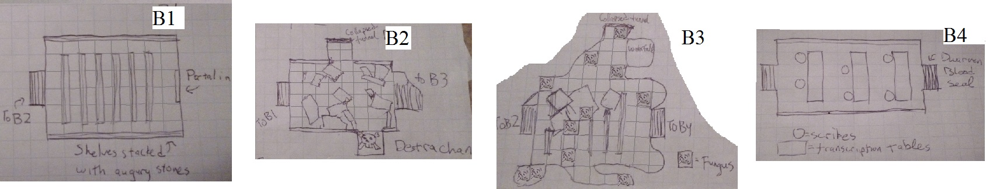
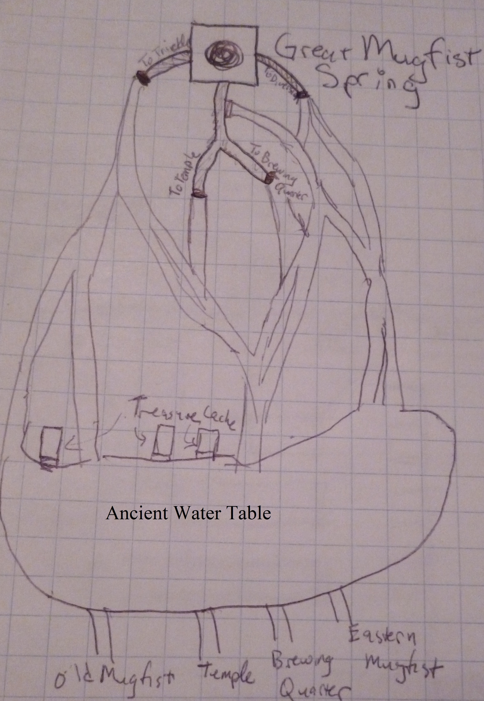
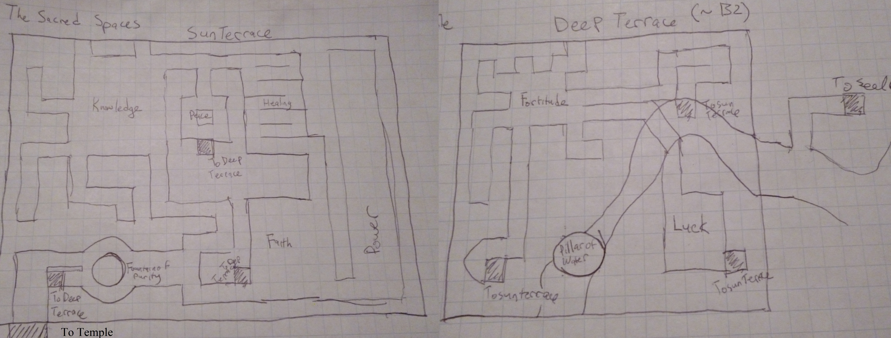
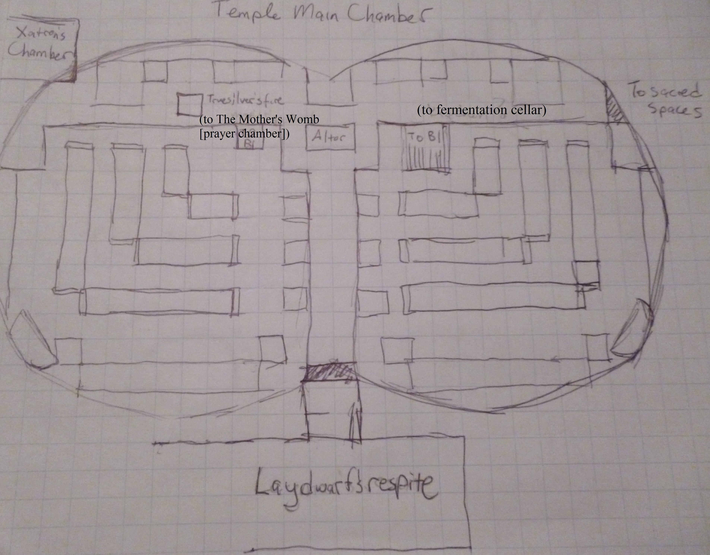

The Mugfist Marriage
Overview
The close friends of cleric Cassia Brillium, a former dwarven priestess of Berronar Truesilver, have been asked to accompany her to her brother's wedding in the dwarven kingdom of Mugfist on the plane of Uru. Still somewhat shaky on the details, Cassia explains that her brother Doug, formerly a vagabond, has now found himself marrying the princess of Mugfist. She herself has just received the news from a dwarven warrior, who came to Sigil from Mugfist to escort her home. Amused, but delighted, there is also a very apparent vague sense of dread following Cassia as she returns to her home plane.
The Mugfist-side portal is located in a shallow cave a mile away from the city. The portal and key involves pouring a tankard of ale on a specific bowl of fire in Sigil. On arriving, adventurers are attacked by a chimera who has killed the two guards watching the portal. Their escort is shocked by the appearance of such a creature. After defeating it, they proceed to be escorted to the kingdom of Mugfist.
The kingdom of Mugfist is an enormous walled city built on a mountain spring, with its main castle in the most protected position, recessed into the face of a mountain. Rife with poverty, the city offers adventurers many an opportunity to see what appears to be the mismanagement of the royalty and the overwhelming presence of the religious powers in the city. Adventurers are escorted to the castle, passing through a strong magical barrier that blocks all being of non-Dwarven blood unless accompanied by a royal escort (who casts a special short duration polymorph spell), or carrying an enchanted royal symbol that has a similar effect. Once in the castle, adventurers are introduced to Doug, who seems smarter and less nourished than the other royal dwarves. Cassia questions him and he convinces her it's his roguish charm that won over the princess. Cassia spends an afternoon with Doug while adventurers are given chambers in the lower levels of the castle. They are dressed and disarmed for the feast that night where they meet the clueless king Rogan, the sour but slightly more knowledgeable queen Tirrany, and "pretty for a dwarf" princess Fanady. Upon being drugged by Doug, the adventurers, minus Cassia, awaken in a secret prison, from which escape is possible through the dousing of a magic brazier with some sort of liquid. After questioning various inmates and escaping, the kingdom opens out in front of them; the rest of the campaign is somewhat open-ended based on how adventurers choose to pursue leads with prison inmates that lead them to discover more about Doug and his new imminent princedom.
Story Structures
Most adventurers will end up speaking to the dwarf priestess Elara while jailed. She will explain that she was sent by the temple of Berronar Truesilver to expose Doug as nothing more than a crafty rabble-rouser. Regardless of whether she is freed or not, she will suggest adventurers go to the temple to speak to the Xatron. Once there, whether by following an emergency carriage that appears to be containing a dwarf that looks like Cassia, or by choice, they will have to perform the unstable spell absorber encounter, which will lead them to speak to the thieves carrying the artifact that begins the encounter, should they survive. The thieves will thank them, and offer to speak later, especially if they are questioned about the unstable artifact they held.
If the adventurers choose to speak with the thieves, they are introduced to Deepshine, the guild of thieves living in the Old City, and after arriving at a meeting of various community leaders, they are eventually offered a mission to investigate and retrieve Scrolls of Infinite Knowledge from The Hallowed Library, a many-floored subterranean dungeon created long before the city. If questioned about Doug, they will vaguely remember his existence but be unable to articulate why he seems so familiar. Once at the bottom floor of the library, and with enough arcane knowledge, adventurers will discover that beyond the Scrolls of Infinite Knowledge lies the Book of Moradin. With fresh ink from a ghost scribe’s pen still drying on the book, they may choose to alter the fate of Mugfist forever by undoing Doug’s future by un-writing what he has written with the ghost pen. If adventurers cannot decipher the book, it can be left alone, or brought to the castle, the temple, or the thieves. The consequences of their action lead to either a peaceful resolution (adventurer’s erase Doug’s plans entirely, or the thieves guild burns the book, thinking it too dangerous and too unpredictable for their predictable thieving world. Cassia, memory changed, visits Doug in the hovels and wishes him well), a fiery battle with the tripartite Xatron if Doug’s plans are left to fruit (usually at the marriage ceremony itself), or a verbal confrontation with the king, the queen, Doug and the Xatron in the castle about the fate of Mugfist (usually ending in a fiery battle).
Alternately, they may try and re-enter Mugfist castle through the front door, which will likely fail owing to the guards not recognizing the sundry group of adventurers, or by the underground network of waterways opened by runes and braziers that respond when doused with some of the city’s various brews. Once there, they may attempt to investigate their drugging by Doug, discovering he is slightly xenophobic and paranoid. The verbal confrontation with the king, the queen, Doug and the Xatron proceeds but with differing evidence.
At any point during the exploration of Mugfist, it is possible for monsters to pop out of the mountainside, unearthed by the increasing expansion of The Hovels. Adventurers choosing to investigate this will come into contact with Noirom the Wide-Armed who will offer various insights to the situation as he sees it.
Locations
The Plane of Uru
Near Mugfist, the plane of Uru is a rocky landscape of gray stone. The short path from the portal to the city ascends. Behind Mugfist, further up the mountain, is falling snow. Golden eagles fly through the air, and the occasional ram can be seen stepping over the stones. In the lower altitudes lie sparse upland forests with lichen growing in vines. The air is thin.

The Kingdom of Mugfist
The city and castle of Mugfist are carved into the mountain. The main source of water in the city is an underground mountain spring that surfaces below the castle. The two main waterways that run from the castle, “The Diversion” and “The Dribble” separate the western, central and eastern districts of the city. A third waterway, “The Trickle,” was artificially crafted to serve the needs of “The Hovels” district which runs vertically up the western mountain side. The kingdom faces the sunset, and in the evening hour, when it is said, “the sun is lower than the kingdom,” grand balls are held in the castle. Mugfist’s population is entirely dwarven. Other races are seen with a mix of curiosity and wariness.
The Middens are essentially an enormous sanitation problem. The poor from Old Mugfist as well as The Hovels dump all of their waste into The Trickle, forming The Middens, a stinking heap that occasionally gets flushed clear in a strong rain. Passing over it is a single bridge, linking The Hovels to the rest of the city.
The Hovels are where the marginalized of Mugfist live. Finding no room within the city, they have found themselves on the most barren outskirts still technically within the city walls. Rough hewn stone steps lead up the side of the mountain, passing by small caves that have been gouged out of the stone with little more than dwarven desperation and a few shared shovels and picks. The poor living here, limited in their community by the difficulty of the geography, gather around their one spiritual leader,
Noirom the Wide-Armed. Recent digs have unearthed more trouble, in the form of monsters, than anyone would like to admit. Accidents, however, are rarely noted by anyone outside The Hovels.
Old Mugfist holds the remnants of the oldest part of the city. A winding, disorganized morass, it is now home to the lowlives and the low-income workers of Mugfist. The political powers in Mugfist try and maintain a presence of law within the old city, but as time passes, the landscape of Old Mugfist resembles more of an inhabited area (complete with colorful awnings, laundry drying in every open space, and more than a few gambling dens and brothels for flavor), than a tourist attraction. The presence of the law wanes. The rumor is that each building in Old Mugfist has at least one entrance to the massive underground network that supplies and maintains Deepshine, the thieves' guild. Recently, The Temple of Berronar Truesilver has erected a statue in Old Mugfist in honor of
King Rogan, amidst more than a few grumbles.
In the northeast corner of Old Mugfist is
The Hallowed Library. The Hallowed Library, as old as the city itself, was used to house the Scrolls of Infinite Knowledge, "unearthed" by the first king of Mugfist, Amon of the Red Cauldron. Once a source of knowledge, and magical control, the royalty in the past centuries have largely abandoned it, instead turning to their own, more direct sources to hold the reigns of power. The arcane powers within the library have warped the region into a planes-shifted region, roamed not only by subterranean creatures, but twisted magic monsters and artifacts from realms once linked to the scrolls. The entrance, which is actually just a portion of wall that is vulnerable to the stoneshape spell, is guarded by royal sentinels from the castle, who know little of the history of the library, but who have their direct orders to not let anyone in.
The vendor stalls in
Market Row mostly sell baked bread, stonework implements, rough tubers, and carts of early blossom apples. There are also specialty dried meats, and sausages, and surprisingly soft earth colored clothes. The merchants are busy but terse, and few travelers are accosted, except perhaps in jest. Living among the merchants are artisans of the earthly realm, tanners, cobblers, stoneworkers and bread-bakers. They seem to have acclimated themselves to the bustle and activity of the district. This has lead some to comment along the lines of dwarven attention spans being as steady as the stones they lived in.
Beyond the market is the enormous
temple of Berronar Truesilver. Bejeweled and glittering, it draws pilgrims from all the land to worship in its grand spaces. In addition to the main cathedral, the temple also holds herbalist's quarters to carry out research on sacred herbs, and a large healer's temple, which doubles as the city's hospital. Behind it, within a magical barrier, is The Sacred Spaces, a sunlit area which is, essentially, an enormous herb garden coupled with a meditation path. King Rogan is known to take walks in it occasionally. More regularly there are white-robed clerics tending to the space, and despite the constant bustle of maintenance, there's an air of peace. The Xatron is directly in charge of the gift-giving campaign to Castle Mugfist; each day, a cart heaped with blessed elixirs trundles towards the castle. When it returns, it is filled with other types of gifts from the earth, largely, various forms of gold and silver.
The Avalanche District is known as "old, old Mugfist," in that it is comprised entirely of subterranean homes that pre-date the founding of the actual city. Propriety and fear prevent building on top of the gentle mounds that characterize the district, as these mounds are the homes, and they are owned by the more mysterious in the city. If ever a grand wizard or a retired spy emerges, Mugfist strongly suspects they rose out of the Avalanche District. Modern Mugfist, encompassing both the above ground and below ground has little to say to those in the Avalanche District other than to remark loudly that they are more or less ordinary, while believing slightly otherwise.
The Brewing Quarter houses the city's many breweries, and sports both above and below ground drinking quarters. The five Great Breweries: The Royal Brewery (regal, expensive), Wolf's Tears (wild, evergreen), Halfling's Stein (rich, buttery, small), Pelor's Tears (fragrant with sun, golden grains and air) and Dark Waters (bitter, mysterious, vision-evoking). In addition to the drinking areas, there are two Central Stages, one above ground and one below ground where shows and performers are constantly earning their keep. In the southwest corner of the Brewing Quartier is the Foodière, or, generally, the public feasting hall, akin to a market. It exists only below ground, its entrance the only part of it peeking out into the sunlit world. In the northeast corner of the Brewing Quarter, a bonfire of varying size constantly burns. The wisdom of keeping a large fire near drinking dwarves has been constantly questioned, yet nobody remembers a time when it was not so.
Noble's Garden stands at the southeast side of the Brewing Quarter. An above-ground garden meant for the nobles, it is more often frequented by stumbling dwarves disoriented from their time in the Brewing Quarter. In recent years, security has been tightened so that nobles visiting from East Mugfist don't have to step over quite so many passed out drunkards during their evening walks. They've even installed magical barriers to block the sound. They've yet to work on the smell, however, though there is frequent discussion as to whether or not the nobles actually disapprove of it.
Artisan's Square is home to the spellcrafters of Mugfist. Many think of it as a quieter extension of market row, where goods that can't quite be bought through conventional means are peddled. Of course, there are the clean, legitimate ateliers, such as "Chammariel's," "Stone-Singers" and "Zas's Spells," but for every one store there are at least three pucker-eyed witches hanging around their alleys, selling apples in colors that do not befit any regular fruit.
Eastern Mugfist is populated by new wealth. Seen as the best location in Mugfist (meaning, largely, it is furthest from The Hovels), it is frequently patrolled by royal guards. The buildings are new, well-maintained, and usually somewhat gaudy. Many of the new, wealthy dwarves are shirking the way of the earth, preferring gardens and open air spaces with a great deal of sunlight. Despite their need to consistently apply weak sun protection, many newly wealthy dwarves choose to incorporate a great deal of glass into the material that makes up their homes. Older, wealthy dwarves prefer to stick to earthier materials, choosing stones and clay to build their (in comparison) humble looking mansions.
The Diversion is the main source of water to Eastern Mugfist. A new relatively new river, The Diversion was created through the political power of the dwarves in Eastern Mugfist, demanding a superterranean source of water both for aesthetic and practical reasons. It is kept clean by practical, but somewhat primitive looking gondolas that fish out any trash or small dwarven children that happen to fall into the water.

Mugfist Castle
Carved from smooth, white stone, Mugfist Castle lies in a recess carved out of the mountain at the back side of the city. It exudes a cool, dark ambiance; its resident dwarves don't seem to mind one bit, but, often, magic lamps that cast warm orange light are lit during the day for the sake of ornament. Rather than large windows, many of the buildings are marked pragmatically with arrow slits. Beneath the castle lies a large natural spring, the source of all the water in the kingdom of Mugfist. The castle is marked by four great spires: the dislocated east spire, housing the dungeons, the central spire, where the royalty stays, and the two residence towers, for the castle's guests, and staff. Outside lies the royal observatory, used rarely and only when earthly answers are no longer found in the ground (the observatory, furthermore, is of limited use owing to its limited field of vision). The central area, connecting the two residence towers and the central spire, is comprised of the humble audience chamber, where most public royal business is conducted. Behind it lies the Great Hall, where grand parties are held that often spill into Hall of Dancing Lights, above, and Nightluminous Terrace, a floor above that. In the evening, as the sun sets, the Hall of Dancing Lights is lit by the evening sun. The pattern of the lights through the uneven, small, leaf-and-diamond-design windows and the levitating lamps come together to make it the grandest ballroom in the land. Above it, the perpetually shaded Nightluminous Terrace houses a variety of strange, darkness-loving plants growing within and around ancient stonework in the shape of statues, gazebos and miniature mazes. It is lit by green magic orbs on small poles, lighting a path through. The subterranean kitchens, drawing heavily on the spring below, ventilate their smoke and detritus through a series of pipes leading deeper into the mountains.
The castle's halls are decorated with suits of armor, and arms, and plenty of stonework novelties. There are occasional tapestries linked to the founding stories of the kingdom, and near them are often statues and reliefs of ancestor royalty. There are, markedly, no painted portraits, the dwarves eschewing painted materials.
Notably, Mugfist Castle is sealed by a dwarf-blood barrier, non-dwarves requiring special polymorph spells known by dwarven escorts, or royal symbols (a Mugfist pendant) to pass through. Unknown to adventurers at the onset, dwarf blood can be simulated by drinking about 1/10 of their weight in royal ale.
Characters
King Rogan is the ruler of Mugfist. He rises to an austere 5’1” in height. His hair beneath his crown is long and brown. His beard is well groomed and flowing. The king of Mugfist, though stunning by dwarven standards, is best described as pleasantly oblivious. His best quality is his deep and thoughtful love of his daughter. Introduced first at the wedding banquet, guests find his wife answering most of the questions directed towards him. If pressed to enact any sort of change upon the status quo, he responds generally with “oh, but, why? Most of the kingdom is doing wonderfully.” If pressed further, he explains his heart goes out to the poor, and that some day he hopes his kingdom’s love can encompass them all. Currently, he ruminates, the poor would leave if they didn’t want to remain. They just seem to grow so quickly, so much faster than this old kingdom. He holds a key relation with the Xatron. His personal chambers are adorned with religious symbols made of various precious stones, very obviously gifted from the temple.
Queen Tirrany is the more clever of the two. Sour and somewhat at the end of her patience with her husband, the weight of the crown seems to tilt a bit off of Rogan’s head and rest mostly on her shoulders. She explains to adventurers the reality of the kingdom, knowing numbers, statistics and names of community leaders in the varying parts of the city. Though armed with knowledge she feels a certain hopeless stagnancy. Though mentally very acute, she’s never found without a flagon in her hand. She loves her daughter very much and, if questioned, is surprisingly approving of her current relationship. Tirrany’s relationship with the Xatron is somewhat unclear. She clearly does not have the same affection for the Xatron her husband does, but, neither does she dislike the figure. She treats the Xatron as simply another jagged piece, jammed into the puzzle of the city.
Cassia Brillium is a dwarven cleric formerly working under the goddess Berronar Truesilver. Close to middle age, she was disillusioned years ago by the way things were going in Mugfist. She fled and chose the life of an adventurer, hoping on the one hand to never see the plane again. Fierce and clever, her feelings of familial affection are kindled and perhaps overblown by the whole ordeal and her sudden contact with her family, whom she feels she betrayed by deserting. Her domains are Healing and Sun, and she is pivotal to the motivation of the campaign, as she draws adventurers into her familial disputes.
Doug Brillium is Cassia’s much younger brother. He was young when Cassia left for life in temple. She occasionally visited and noted mostly that he was always slacking off in school. As he grew older, he fell into a rough crowd. Taking his training from them, he learned his way around a blade and grew up with the talents of the rogue. The baby of the family, Doug is small, and somewhat frail, but plumping, in his time in the court. His hands are scarred and rough, his eyes sparkle, black and intelligent. Though he is dressed well, there is a knife scar on cheek that he cannot hide. The campaign revolves around Doug's manipulation of the Book of Moradin, putting him in a position to marry Princess Fanady and eventually enact change that will, what he believes, is bring peace and equality to the kingdom. Relentless to the point of obsession, he tries to iron out any uncertainties and unnecessary details, including the ambiguity of extra-planar adventurers. When questioned as to how he won the heart of Princess Fanady, he tells Cassia, “I won the hand of the princess, wooing her secretly, as is my way. Seeing her nightly, sneaking out, she eventually asked her father for my hand and he eventually acquiesced when he saw how happy we were. Not without his doubts--he might throw me out at any moment! Haha! But, I trust her. The princess keeps me here."
Princess Fanady is 16 years old and meek like a mouse. Doted on by her parents, the best the rest of Mugfist offers is, "she's pretty enough." She blooms when Doug is around, however, though still learning to choose her words, she looks to him and smiles, betraying a degree of otherworldly trust that her parents found hard to ignore.
The Xatron is otherworldly in presentation, like most divine leaders, but all too dwarven in action. The Xatron is ambiguously gendered. In the context of regular speech The Xatron is referred to as "holy" (i.e. his/her = holy's, he/she = holy). Born out of necessity, it's grown into a symbol of separation and power. The Xatron is warm to adventurers, caring about their welfare and thanking them for their help. Most local dwarves will be surprised at this reaction. The Xatron seems almost too careful with holy's words, though holy voices his opinions unambiguously: holy is concerned about the protection of the realm and the stability of its future rulers.
Elara is found in the jails of Castle Mugfist. Her skin is waxy, and cold. Her hair hangs limply with neglect. In her cell, her many meals lie untouched. Some attribute it to her strange fervor and the glint in her eyes, the more sensitive realize it is because she is undead. Talented in knives and the language of the Celestials, she moves with an unnerving flexibility. If questioned and persuaded or intimidated, she will explain that she was an assassin sent by The Xatron to deal with uppity Doug. She will explain she was unable to make it even past the front door before she was jailed, Doug being either extremely canny or extremely paranoid. Her stance is much the same as The Xatron's. Order must be retained, and the death of one rabble rouser is better than a kingdom aflame. If freed she will go immediately to the temple.
Draco and Gundagai are two dwarves who aren't quite right in the head. Found also in the Mugfist jails, the prison ledgers seem to not have a time in which they weren't incarcerated. Unable even to recall their original crime, they sit in their cell, awaiting death, feeble Draco mumbling constantly, "you will die here." Gundagai, the more simple of the two, and more clearly the hired muscle of the job, rather than the brains, picks at his toenails. If questioned, Gundagai states that the crime was "the biggest stealing of the forever," but is unable to articulate why or how long they'd been imprisoned for it. In reality, Draco and Gundagai were Doug's two companions during his encounter with the Book of Moradin. Being illiterate, they were unable to understand the gravity of the situation, and Doug simply wrote them out of history straight into jail, planning to execute them to tie up any loose ends. If they are freed they will head unconsciously and indirectly towards the Deepshine headquarters.
Haron Deepshine is the current leader of the thieves guild, Deepshine. Somewhat new to the position, he isn't quite sure how he stumbled upon it, but he takes great pride in knowing about "the real Mugfist." The savvy dwarf knows where to get the best deals, to make the cleanest kills, and where the richest houses are in Eastern Mugfist. He is motivated by coin, and little else. With the arrival of adventurers with new talent, Haron rekindles a familiar interest in the possible acquisition of the Scrolls of Infinite Knowledge from The Hallowed Library. The scrolls are an old preoccupation of the guild through the centuries. He simply explains they are "some old pieces paper with some Dwarven stuff that people will pay loads for," never revealing the true nature of the scrolls. He offers a handsome sum for them. His opinion on the temple is fairly transparent. He states that they hold little beyond their own interests in mind and that they are perpetuating a slow decline of the city. There is still opportunity in the city for thieves, however, and there isn't a lot to be said about it otherwise. His opinion on the new prince is mysteriously hazy. "He seems like a good enough guy. Never met him but they say his hands show he's been in the business."
Noirom the Wide-Armed is the current community leader in The Hovels. The oldest dwarf there, at around 80 years of age, he acquired his position by having the wisdom needed to survive as long as he has. This wisdom involves often not telling the entire truth, and speaking out for his best interests. Irritated by the current state of the city, he will admit no fault in any of the recent monster accidents in the city. If, however, he is cornered and if adventurers manage to see or battle a monster escaping from a recently dug hovel he will admit that there's a problem and that nobody will deal with it.
Puzzles, Dungeons, and Encounters
The Chimera and The Gate

The
Chimera and The Gate will be the first encounter of the campaign. After Cassia and the accompanying guard cross the portcullis, a chimera will appear, blocking the exit. The guard will call for adventurers to flee back towards Sigil while he runs forward to lower the portcullis on his first turn. The portcullis, made of wrought iron, weighs about 1,200 pounds. Cassia will accompany him. If adventurers choose to flee or are caught behind the portcullis, the two dwarves will likely die. The Chimera attacks using breath attacks. Its full attack involves using both claws and its many heads.
The Jail and The Shack
Adventurers will awaken in separate jail cells unarmed after the banquet incident. The jail currently houses 3 other prisoners, Gundagai, Draco and Elara. The cells themselves have three walls of stone, and one open side gated with iron bars about 4 inches apart. They will have no magical inhibitors unless any adventurers show a talent for casting prior to being imprisoned. Guards will patrol the area regularly swilling drink out of a festive mug. If adventurers are unable to convince, beat up, or magic a guard, one will eventually fall asleep within clawing distance of a cell. Once freed, they will have the option of speaking to and freeing other prisoners, whose personalities and speeches are explained in the Important NPCs section.
After brief exploration, adventurers will see that the jail has no exit. It instead ends abruptly at a wall, in front of which is a brazier surrounded by faint Dwarven magic runes. If read, the runes describe a spell that keeps the woods burning perpetually despite 'water's touch' while hinting vaguely at transport. Liquids poured on the brazier will transport characters to different locations. If water is conjured and poured on the brazier, adventurers that step into it will emerge back in the jail. If adventurers drink the beer they find on the guard and urinate on the brazier, they will be teleported to the basement of the Eastern Spire of Mugfist Castle, where more guards await and where the DM will have to move the campaign along at his own discretion. If they pour the beer they find on the brazier, they will be teleported to an abandoned basement in Western Mugfist (because what self-respecting Mugfistian pours away beer?)

The basement of the abandoned home happens to hold a sleeping
devourer. If Draco and Gundagai are with adventurers, they will quickly squeeze out of a small hole leading out into the street (they've shrunk down to small size since they're both malnourished and rogue-y). Elara will stay with the likely larger adventurers to either sneak by or confront the devourer. Note that blacked out squares represent holes, and Xs on floors represent points where DC 14-17 reflex saves must be made to avoid crashing through the floor and likely waking the devourer. The gold circle in the attic is a forgotten chest holding an amulet of natural armor +1.
The Unstable Spell Absorber

The Unstable Spell Absorber encounter takes place in the Triage Chamber of the Temple of Berronar Truesilver. It begins as two thieves, one resembling Cassia strongly, are carted into the temple from an emergency vehicle. When adventurers arrive, they come to see that neither of the thieves is Cassia. Immediately after, a wave of 1d3 sonic damage emerges from a locket one of the thieves is wearing. It washes across the room and damages everyone and inflicting bleeding damage on any patients already in negative HP. Every 2 rounds an identical wave of sonic damage occurs, reopening wounds of characters with negative hp until the locket is smashed. It's the job of adventurers to prevent anyone from dying with heal checks or healing spells or potions. The more who are saved, the more rewards.
(A) - Jack (after the first wave, his HP is -7; all NPCs die permanently if they hit -10), a rogue and a thief. He screams, wounded, with what appears to be a broken leg. His skin lips are blue with chill but it doesn't seem to have gotten the best of him. As he's carted in, a guard removes a dagger from his belt.
(B) - Helen (-8/-10), also a thief. Her eyes protrude. She shudders uncontrollably. On her self is the amulet of spell absorption, which has absorbed a very strong sonic attack. If removed and smashed it releases one final burst of 1d6 sonic damage but stops its periodic waves. If someone can manage a DC 15 spellcraft and a DC 15 use magic device check, it can be unarmed with no additional damage. If one or both of the thieves are saved, they take quick note of you and ask to meet you out back later as thanks.
(C) Tig (-2/-10), is a young boy. He hails from one of the poorer parts of Old Mugfist. He suffers from an aggressive rash on his legs, as does his brother in the bed next to him.
(D) Tag (-2/-10) is Tig's brother. He is in a similar predicament, If both children are saved their parents return and thank you with 100 gp and two stone cakes from the market. If only one, or neither is saved, there is no additional reward.
(E) Yan (-4/-10), a chef with a somewhat unsavory past involving Deepshine. Suffering from a knife accident in the kitchen, a bandage around two of his fingers seeps with blood but there is little sign of infection. When the two thieves enter the room his eyes widen. He provides information about Deepshine to adventurers if saved and the other thieves happen to die. He will also give adventurers a dagger+1, stating he doesn't want anything to do with the tool that chopped off his fingers.
(F) Brynn (-8/-10) is an elderly dwarf who begins the encounter unconscious. By her side is her husband, who is long overworked from taking care of her. She will bleed every turn regardless of stabilization until she is raised to 0 HP.
(G) Frank (-6/-10) is an elderly dwarf who suffers from dehydration and malnourishment. He is Brynn's husband. If they both survive the encounter he gives adventurers a small gold watch worth 500 gold. He otherwise gives nothing, but the gold watch may be picked from his body if he dies.
(H) Tira (-3/-10) is a somewhat frail attending dwarf who works in the triage ward. Not quite prepared for the danger, the first wave of sonic energy knocks her head against the wall and she falls unconscious. She will be in a similar state to Brynn, in that she will continue to bleed until 0 HP. A 50 charge wand of cure light wounds can be found on her body that can be used for the encounter. If she is saved she gives it to adventurers.
At the end of the encounter, adventurers meet the Xatron. If the majority of patients are saved, the Xatron gives adventurers a scroll of heal in addition to thanking them.
The Hallowed Library

Entrance to the Hallowed Library is negotiated with the thieves accompanying adventurers to the Hallowed Library. Likely, the thieves will serve as unintentional bait, and adventurers will gain admittance to the library using a stoneshape wand or spell.
The first two floors of the library are dominated by a mysterious oculus. From the outside, the library looks like a stone dome. But from within, the sky spills clearly through a large hole in its ceiling. Lining the outer edge of the two floors are shelves of books that containing the sundry knowledge of the realm--flora and fauna catalogs, histories, religious texts, brewing manuals and basic magical knowledge. Notably, various recipes for the divine elixirs may be found among the books.
Beyond the two central rooms, in a separate chamber, are the pair of Moon's Mirrors. During the day they appear as blank walls, but once the sun sets and the diffuse moonlight hits the wall, the Moon's Mirrors become active.
Once every five minutes, the first floor's mirror reflects images onto the second floor's mirror, and vice versa. When an adventurer approaches the mirror, his image (with his current stats) will be projected to the mirror on the other floor. The images step out of the mirror, become corporeal, and attempt to meet their originals, causing 2d6 negative energy damage on contact. When the moving images enter the main chamber and come into contact with the moonlight spilling through the oculus, they become incorporeal. If an image is defeated before it reaches its original source, the original source will become incorporeal and will be able to pass through the mirror on the first floor until the next cycle begins.

B1 of the library holds stone shelves full of stones enchanted with augury spells. A plate on the wall near the entrance to the room reads, "Easy answers, for the masses." Adventurers make take as many as they like. Each stone weighs about 1 pound and can cast augury once. For a good result, a stone cracks in half like an egg. For a bad result, the stone shatters into dust. For a good and bad result, the stone breaks into three pieces. All other breaks are a "nothing" result. They are worth about 25 gold each. There is a slight chill in the air.
B2 of the library is the den of a
destrachan. The destrachan was the source of the unstable spell absorber encounter. It has used its destructive power to destroy most of the books and shelves on the floor, creating difficult terrain. Its exit/hunting tunnel is currently collapsed. Adventurers will likely be unable to sneak by it. If the floors and broken shelves are searched carefully, adventurers may find a ring of deflection+1 among a pile of bones--a previous meal dragged in through the tunnel. They may also stumble upon an ancient tablet describing the historical underground waterways of Mugfist.
B3 of the library is overrun by
fungus. In the northern corner is the remnants of the entrance tunnel created by the destrachan long ago. The moisture from the underground waterfall accidentally breached by a side of the tunnel created a moist environment that has let fungus thrive. The consequent shrieking fungus infestation has made the floor uninhabitable by the destrachan. The temperature continues to drop. All paper materials of the library are long destroyed.
B4 is the chamber of the spectral scribes. The temperature drops sharply. Characters will take 8d4 cold damage per round unless protected. The cold emanates from each incorporeal, scribe, preserved in time by a frosty aura. Their arms, the only parts of them that still move, sap the heat and energy from everything around them in order to keep moving, transcribing histories onto tablets with their ghostly quills. The only way to reduce the cold damage per round is to read from each transcription. If a transcription is read from, aloud, the arm that transcribes it stops moving, reducing the cold damage per round by 1d4. Each scribe writes in a different language, draconian, celestial, infernal, elven, dwarven, common, halfling and gnome. At the end of the chamber, in a separate 20x20 room is the book of Moradin on a pedastal, sealed within by a dwarf blood seal meant only to let pass the living with the qualities of the true king of Mugfist. This barrier may be penetrated by living creatures with the qualities of the true king, and elements of the earth, such as stone or mud. Adventurers may be able to throw stones and fire stone arrows through the barrier, but should they damage the book, it would begin to bleed profusely and history itself would become undone, ending the campaign as the city collapses and falls into itself, the library itself collapsing as well. Should adventurers be able to procure an incorporeal quill, and carefully remove the book, they will be able to write in the book of Moradin with the blood of a dwarven king.
The Waterways
<
(Map not drawn to scale) Formerly, Mugfist was fed by an underground network of rivers and water tables. As terrestrial living became more trendy, above-ground rivers were created to facilitate the cultural shift. What's resulted is a small network of dry rivers feeding into a large underground lake. The resulting passages, a closely sheltered secret of the dwarves, are well sealed. All the most vulnerable points of entry have been built upon. Access to the waterways below Mugfist are gained specifically through four locales. The only way to enter the tunnels without some form of water breathing would be to successfully breach all four entrances, lowering the water level of the lake just enough to permit a reasonable pocket of air between the lake and the ceiling. Water breathing will also work.
The four locales are as follows:
1. Beneath The Sacred Spaces, in a side channel in the underground river, sealed with a flat 6 inch thick stone wall.
2. A cellar in Old Mugfist, sealed with a stone wall behind a wooden door locked with a long-lost key.
3. A long forgotten door near the underground stream that feeds the breweries in The Brewing Quarter, sealed with a stone wall.
4. Beneath In the basement of an older home near a fountain in Eastern Mugfist that holds a brazier similar to the one found in the jails. It responds to the Royal Brew.
Girding the lake are three treasure storage areas containing various sundry dwarven artifacts and cached but long forgotten suits of half plate+1.
The actual tunnels leading out from the lake are dry. As adventurers progress up the tunnels however they will eventually encounter more stone walls that stopped the original rivers from feeding into the lake. The far left and the far right blocks were created to channel The Diversion and The Dribble aboveground. Breaking them will cause the tunnels to flood and adventurers will likely be swept away. The middle two blocks lead to the two rivers that were diverted deeper underground to feed the temple and the Sacred Spaces, and the Brewing Quarter. These two paths give enough room for adventurers to walk beside them if they break the walls carefully and don't block up the water's flow. The paths eventually lead to the Great Spring below Mugfist Castle.
The Cathedral and The Sacred Spaces

The final encounter of the campaign takes place either within the temple cathedral during the wedding ceremony, or outside through the Sacred Spaces as adventurers are alternately fleeing or fighting. The Xatron splits into holy's true tripartite nature, a
dwarf cleric, a
lantern archon, and an
astral deva. The Sacred Spaces are a two-tiered garden (one ground level, the other fairly far below ground). If the encounter takes place in the Sacred Spaces, different regions of the garden will impart different effects on all characters in the area:
Fountain of Purity: Water from the fountain removes all magic effects, diseases, poisons, ability score damage, negative levels and curses on contact.
Knowledge: Each character may cast augury once per round as a free action. All spell DCs increased by 2.
Peace: Direct attacks against a target require a DC 25 will save to execute.
Healing: 10% of total hp healed per round, eating any herb nearby will heal 1d6 hp.
Faith: Lawful good and Lawful Neutral characters get +3 to all saves.
Power: All damage and healing gains an additional 1d4 of damage or healing.
Fortitude: All characters get +4 to fortitude saves.
Luck: All characters get +2 to all saves.

Specific Dialogue
At the banquet:
Cassia: I remember seeing this castle from the outside, as a child. Remember, Doug? We'd see it if we climbed to the roof of our home. It seemed like another world, glittering in the evening.
Doug: Yes, dear sister, it feel like a lifetime ago.
Cassia: I never thought I'd be here. It's just as... it's just as I imagined it would be, the lights, the sculptures, the gaudy Berronar icons, the full table feeding the fat dukes and duch--
Doug: The castle has such a warmth to it.
Cassia: King Rogan, tell me of your realm in these past few years. It's been so long.
King Rogan: Uuh, yes, of course my gracious, Ms. uuh, Doug! Who are you again?
Queen Tirrany (sourly): Cassia, dear, this is Doug's sister, Cassia.
King Rogan: Ms. Cassia Doug.
Queen Tirrany (sighing): Doug Brillium. The man who is going to marry our daughter.
King Rogan: Ah, yes, yes.
Queen Tirrany: Our realm is quite well, Cassia.
Cassia (absently, while sipping on soup): The streets are filled with more restless young men than I remember. I also see there's been some recent excavation in the cliffside.
(Doug meaningfully kicks Cassia under the table)
Queen Tirrany: Such is as it is. No kingdom save the kingdom of the mother is perfect. May she guide our hand so that our people may find their way in these times.
Cassia: I would hope that--(is kicked again)
Doug: Well put, my queen.
The Xatron:
Thank you so much for saving our children. The temple of Berronar Truesilver, the great mother, welcomes any help it can get in times of need. But tell me, for fear of sounding rude, why did you come here? What brings [humans] to Mugfist?
Regardless, the temple thanks you for the great strength of your heart that aided dwarves in their time of need. It is only fair that we share with you the bounty of the mother's bosom.
(if questioned about the opulence of the temple) We use this gold to help those around us. It is only through the use of our lands that we are able to help those around us. The mother understands the necessity and the reality of how our world works. The greater good we can create will carry out Berronar's will.
(if questioned about Cassia) Cassia? Cassia Brillium? I do remember her. Few sisters leave the order in, and let alone in such a fiery manner. She has… strayed from the path of the mother. Four years, disappearing into the night, and now her family marries into royalty.
(if persuaded to talk about Doug) I think the poor boy is in no position to lead our people. The princess, may Berronar bless her soul, may not truly understand the man she... loves. It is no secret that he wishes to create chaos in this land, and for what purpose? I may not see all, but I know in my heart that the work we do here will change Mugfist for the better. His intentions, though done with the best in mind, may ruin us all. But whatever the divines deign. I will pray for good fortune and I will pray that we may remain the welcome hearth in dark times.
Haron Darkshine:
(on Doug) But one thief would easily gut another if he got the chance, especially if he had the royal guard behind him. Can't say I trust him, but maybe a better deal could be worked out between uses and hims.
(on the temple and the king) Berronar Truesilver my eye. The only true silver I see is laced all about their temple like a wedding veil, or girding the king's codpiece. They lick the wealth off of each other and we get to play with their shart. The church is evil, yeah? Never seen a a good deed in them, other than maybe their healers.
(thoughtfully) If only there were a way to separate the entities that help us and the powers that preserve the Middens and drive away the merchants. They usually also don't appreciate outsiders like
(unspoken) humans/elves/halflings/gnomes but maybe you did some good.
The Book of Moradin:
King Amon brought the best from all planes to our Mugfist. With his cauldron rusted red with his blood he summoned their keepers in his Hallowed Library, forever would they write their knowledge. From the land of the elves he brought their knowledge of wood. From the land of the dragons he brought their knowledge of sand and lava. King Amon knew Mugfist would need to master all elements to survive. From the land of the gnomes he brought their knowledge of electricity. From the land of the celestials he brought their blinding light. King Amon knew he would need to understand the bright to conquer it. From the land of man he brought their lust for land and their swarming ways. From the abyss he brought the knowledge of how to control it. King Amon, may his name ever ring in our halls. Servant of Berronar, conquering king, he dances in the dark. King Amon circles and encompasses his enemies like the mountain crushes the weak. King Amon hewed the stone from the face of the mountain and freed the Great Spring, creating prosperity for all. On it he built his beer hall beside his Hallowed Library. In it he lavished his guests with goats and casks of drink larger than the Great Spring...
...King Amon, the ruthless, hard like the stone from which he was born, nursed on the milk of the forge, slew the red wyrm Ruyatti that burned the mountain. His companions, they fell, and only he remained, though all had been the will of the guiding mother...
...King Amon, in the battle of the water devourer, sent his best men against the one that dried Great Spring. They dug the tunnels beneath with the guidance of the mother, but the devourer filled them with fire and many perished. Through the great ingenuity of the dragon people was he able to turn the fire onto itself, until none remained...
...King Amon fought the invaders, the leather-winged men that took dwarven blood and had eyes like jewels. His people became two islands, one island, the temple, the other, the castle...
(then comes a long history of wars and dwarfy king names and the establishment and building of Mugfist with the help of the scrolls of knowledge analyzed for architectural help with a bevy of scholars. Earlier kings generally marry from conquest, bringing in untold wealth, according to the book. In addition, a great importance placed on religious rituals announcing the change of leadership after each king dies. As time progresses, the scrolls of knowledge are no longer mentioned and conquest seems to stop. Kings begin marrying from noble castes of families in the newly developing Eastern Mugfist, the stories of their families having close ties to the temple and being generous donators.)
...thus did King Rogan enact a ban on elevated housing, as it would disrupt the harmony of the earth, the mother, and the kingdom.
(continuing in messy script)
AND then DOUG brillium was born. HE was born in a good family that loved him a lot. HE fell in love with princess FANADY and she fell in love with him back. HE got them marieed at the temple and he was KING!!!
(ending the messy script)
Monster Compendium